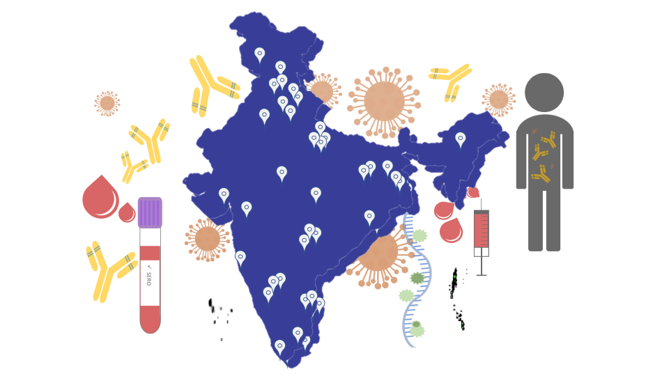

PI-CHeCK
Phenome India-CSIR Health Cohort Knowledgebase

About Us
Phenome India-CSIR Health Cohort
Knowledgebase is a Pan-India cohort consortium which will carry out a longitudinal study
based on already established network of CSIR’s research labs across India. Since
early diagnosis is the key to disease management, we aim to develop clinically
useful personalized risk prediction scores for communicable and
non-communicable cardiometabolic disorders. The markers currently being used to
predict disease risk and its prognosis are based on western studies. However,
the disease risk factors in India can be perceived to be different than in
other parts of the world since lifestyle, including dietary habits, are
distinct. It is thus, important that we look at these problems through the
prism of our unique lifestyle, cultural habits and genetic composition which
are the hallmark of precision medicine.
Long-term goal of CSIR Health Cohort
Develop Clinically useful personalized
risk prediction scores for communicable and non-communicable
(cardiometabolic) disorders
Short-term goals of CSIR Health Cohort
To determine seroprevalence and stability of antibodies against SARS-CoV-2
To ascertain the effect of micronutrient deficiency on the lipidome
To evaluate the association of plasma metals with risk of metabolic diseases
To define immuno-metabolic wellness by identification of key regulatory modules by integrated analysis of genomics, plasma metabolome, proteome and systemic immunome
To evaluate the dietary influence on amino acid levels
To identify miRNA markers for cardio-metabolic and neuropsychiatric diseases
To assess if telomere length is correlated to metabolic parameters
To elucidate the relationship between biochemistry, metabolomics, anthropometry and body composition analysis with a) transient elastography, b) fundus imaging and c) skin barrier function
To develop disease/pathway specific MRM panels for proteins and metabolites
To evaluate the association of inflammatory mediators on lung function
To undertake efforts of cooperation and association with other relevant cohorts and organizations in the country
Conducting workshops/symposiums for training students to various aspects of 'omics' research